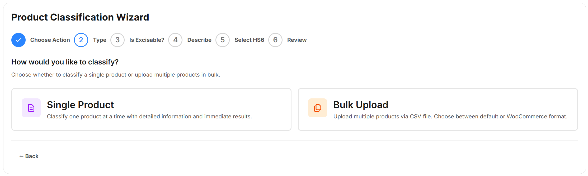

Product Classification Wizard
Use the Product Classification wizard to classify a single product or a number of products.
To open the Wizard, click Product Classification on the side panel. The following UI is displayed:

The steps are tailored based on whether you want t
Single Product Classifications
You may want to get the HS6 code for a single product. For example, if you have just added a new product to your range.
For more information about how to use the Wizard to classify a single product, see Classifying a Single Product
Batch Classifcations
You may want to classify a large batch of products. For example, if you are classifying your products for the first time. ePAL provides a facility to upload files containing multiple products for classification.
For more information about how to classify a batch of product, see LINK.
Existing Classifications
You can also view your previous classifications. You can also export these.